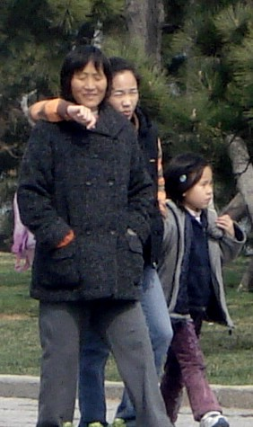

| Three Generations | BACK TO DATE PAGE | ||||||||||||
| I'm not sure this is a three-generational picture, but let's pretend it is. | |||||||||||||
|  | |||||||||||||
| I took this picture on Friday, April 4th, while I was taking a long walk along Qingdao's seaside. It was the first day of a three-day weekend that I am still enjoying here in China. April 4th was Ching Ming (Qingming). Most people call this holiday 'grave-sweeping day' because people head to the cemetery to clean graves. There are many Ching Ming rituals which include pulling out weeds around the headstone, cleaning the stone, and replacing wilted or dead flowers with fresh ones. People also burn incense and paper money. The paper money is for the ancestors to use in the afterlife. | |||||||||||||
| According to the internet, you'll even see food arranged on the gravestones, but it's not a picnic. The food is an offering to the spirits. Other rituals include family members pouring wine on the grave or setting off firecrackers to scare away evil spirits. The firecrackers also let deceased loved ones know they're there to pay their respects. Legend has it that unhappy spirits wander the earth on Ching Ming day. It's considered bad luck to do important business or to have an operation on April 5th. April 5th? You thought I said April 4th? Ching Ming is celebrated on April 5th of almost every year, or, more correctly, on the 106th day after the Winter solstice. So, during Leap Year, like 2008, Ching Ming is celebrated on April 4th. Ching Ming is an honoring of ancestors--a glaring cultural difference | |||||||||||||
| from the United States. I visit my father's grave whenever I'm in town, but my grandparents' graves, right next door, have gone almost ignored by me. I need to learn from the Chinese and change my behavior. | |||||||||||||
| BACK TO DATE PAGE | |||||||||||||